Contexte
La réduction de la fracture numérique constitue un enjeu majeur pour l'inclusion sociale, l'accès au savoir et le développement territorial au Cameroun. Dans cette perspective, le Ministère de la Recherche Scientifique et de l'Innovation (MINRESI), à travers le Comité National de Développement des Technologies (CNDT), multiplie les initiatives visant à rapprocher les technologies numériques et l'intelligence artificielle des populations rurales.
Placées sous le haut patronage de Madame le Ministre de la Recherche Scientifique et de l'Innovation, Dr Madeleine TCHUINTE, et conduites sous la supervision du Secrétaire permanent du CNDT, Dr ELE ABIAMA Patrice, les actions menées aux Plateformes énergétiques rurales (PER) d'Akonolinga et de Bayangam témoignent de cette volonté de faire du numérique un instrument concret d'éducation, d'innovation et d'autonomisation des communautés.
Déployées en août et septembre 2025, ces initiatives ont permis de former et de sensibiliser des jeunes, des enseignants et d'autres acteurs locaux aux outils informatiques, à la programmation et aux usages de l'intelligence artificielle. Elles ont été suivies, en juin 2026, par une mission technique consacrée à l'évaluation et à la maintenance des équipements de la PER de Bayangam, dans une logique de pérennisation des acquis.
1. AKONOLINGA : L’ÉNERGIE SOLAIRE AU SERVICE DE L’INCLUSION NUMÉRIQUE
Du 5 au 15 août 2025, la Plateforme énergétique rurale d'Akonolinga a accueilli un atelier de formation de dix jours consacré à l'initiation aux outils numériques et à la découverte de l'intelligence artificielle. Grâce à son infrastructure à alimentation photovoltaïque, le site a offert un cadre propice à l'apprentissage et à l'appropriation des technologies, malgré les contraintes auxquelles les zones rurales peuvent être confrontées en matière d'accès à l'énergie et à Internet.
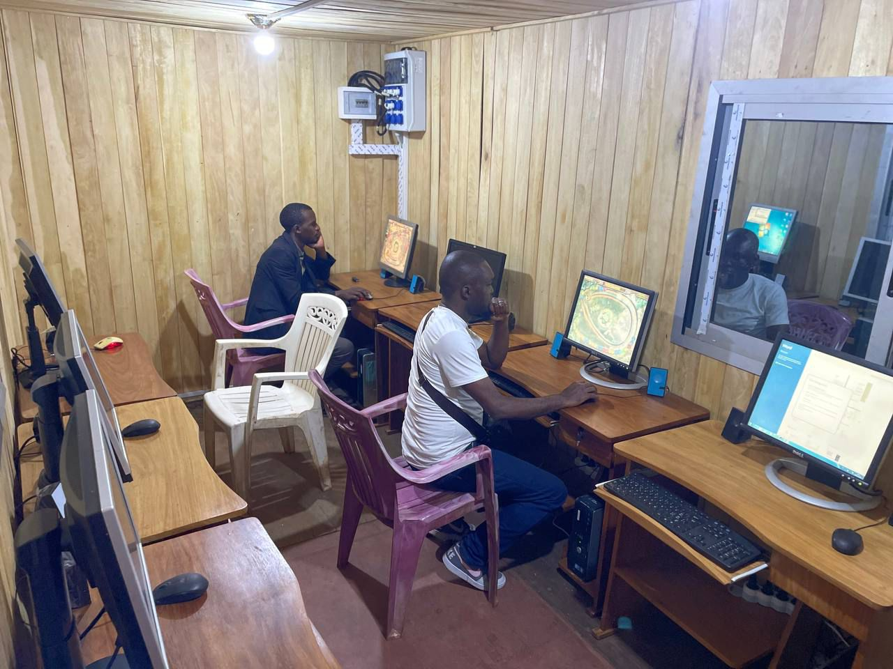
Des compétences numériques fondamentales aux premiers pas vers l'intelligence artificielle
L'atelier a mobilisé une trentaine de participants autour d'un programme pédagogique progressif, adapté aux besoins des apprenants et aux réalités locales. Les activités ont porté notamment sur les fondamentaux de l'informatique, la prise en main des équipements et des logiciels, ainsi que l'initiation au traitement de texte avec Microsoft Word.
Les participants ont également été familiarisés avec les outils de création graphique, notamment Paint, et avec la programmation visuelle à travers Scratch. Cette approche leur a permis de découvrir les principes de la logique algorithmique et les premières étapes de la conception de programmes interactifs.
Une attention particulière a été accordée à l'utilisation de l'ordinateur comme support pédagogique pour l'apprentissage des sciences et des mathématiques. Dans cette dynamique, l'installation de l'encyclopédie numérique hors ligne Kiwix a contribué à faciliter l'accès aux ressources documentaires, en apportant une réponse pratique aux difficultés de connectivité.
Au-delà de la maîtrise des outils informatiques, les échanges avec les adultes et les acteurs du secteur éducatif ont porté sur les fondements, les possibilités et les limites de l'intelligence artificielle. Les discussions ont notamment abordé les applications potentielles de cette technologie dans des domaines prioritaires tels que l'éducation, l'agriculture et la santé.
Cette démarche vise à favoriser une appropriation progressive et responsable de l'IA, en donnant aux populations les connaissances nécessaires pour mieux comprendre ses usages et son potentiel au service du développement local.
2. BAYANGAM : UNE MOBILISATION COMMUNAUTAIRE AUTOUR DE L’INNOVATION NUMÉRIQUE
Dans le prolongement de l'expérience d'Akonolinga, la Plateforme énergétique rurale de Bayangam a accueilli, du 27 août au 8 septembre 2025, un atelier consacré au renforcement des compétences numériques et à l'initiation à l'intelligence artificielle.
Cette activité a illustré la complémentarité entre la recherche scientifique, l'action publique, les autorités administratives, les collectivités territoriales décentralisées et les communautés locales. Elle a également mis en évidence le rôle que peuvent jouer les infrastructures numériques de proximité dans la diffusion du savoir et la promotion de l'innovation en milieu rural.
Une visite ministérielle porteuse de visibilité institutionnelle
L'atelier a été marqué par la visite officielle de Madame le Ministre de la Recherche Scientifique et de l'Innovation, Dr Madeleine TCHUINTE, accompagnée du Gouverneur de la région de l'Ouest et accueillie par le Secrétaire permanent du CNDT.
La présence des autorités locales, notamment le Sous-préfet de l'arrondissement de Bayangam, le Maire de la commune et Sa Majesté le Roi de Bayangam, a conféré à cette initiative une dimension institutionnelle et communautaire particulière.
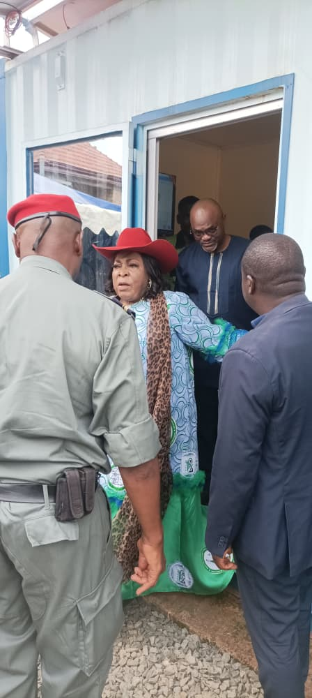
Cette mobilisation a traduit l'intérêt porté à une démarche qui associe formation, accès aux technologies et valorisation des infrastructures rurales. Elle a également souligné l'importance de l'engagement des acteurs locaux pour favoriser l'appropriation des outils numériques par les populations et assurer la continuité des activités après les sessions de formation.
Soixante-deux apprenants mobilisés autour des usages du numérique
L'atelier de Bayangam a bénéficié à 62 apprenants, comprenant notamment des élèves, des femmes et des acteurs du secteur éducatif local. Le programme a combiné acquisition de compétences pratiques et sensibilisation aux enjeux des nouvelles technologies.
Les participants ont été initiés aux outils bureautiques, à la création numérique et à la programmation visuelle avec Scratch. Ces enseignements ont contribué à développer leurs aptitudes à utiliser les outils informatiques et à mieux comprendre les mécanismes élémentaires qui sous-tendent la conception de solutions numériques.
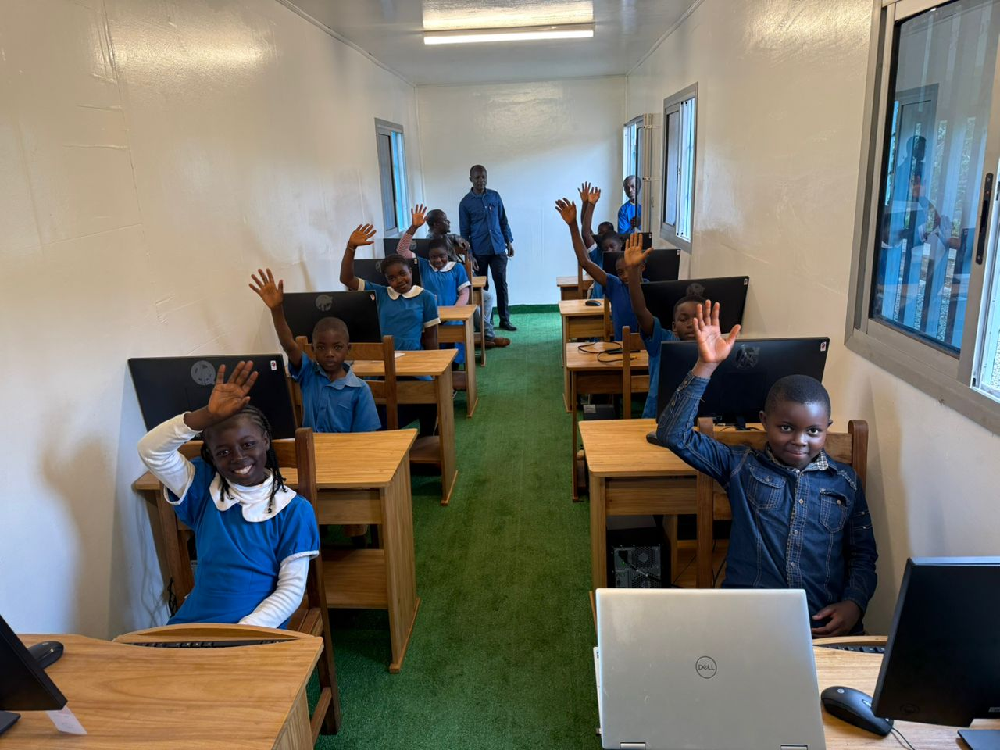
Le volet consacré à l'intelligence artificielle a permis de présenter ses principaux concepts, ses applications possibles et ses limites. Les échanges ont également encouragé les jeunes à réfléchir à des projets technologiques susceptibles de répondre à certains besoins de leur communauté.
En rapprochant les outils numériques des apprenants, cette initiative participe à la construction d'une culture technologique de base, indispensable à la poursuite des apprentissages et à l'émergence de nouvelles vocations dans les métiers du numérique.
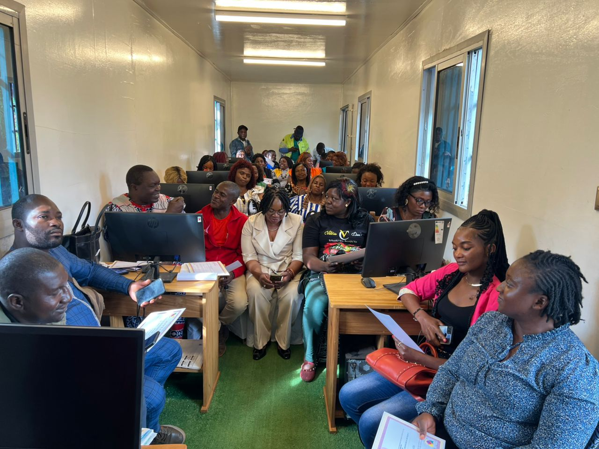
3. BAYANGAM : UNE MISSION TECHNIQUE POUR PRÉSERVER LES ACQUIS ET ASSURER LA DURABILITÉ DES ÉQUIPEMENTS
L'efficacité d'une infrastructure numérique ne repose pas uniquement sur les équipements installés ou les formations dispensées. Elle dépend aussi de la maintenance des installations, de la disponibilité des ressources énergétiques et de la capacité à maintenir les équipements en état de fonctionnement.
C'est dans cette perspective que le CNDT a conduit, du 2 au 7 juin 2026, une mission d'évaluation technique et de maintenance préventive sur la Plateforme énergétique rurale de Bayangam, en coordination avec le Centre régional de la recherche scientifique et de l'innovation de l'Ouest (CRRI-Ouest).
Cette mission avait pour objectif d'examiner l'état de fonctionnement des installations énergétiques et informatiques, d'identifier les difficultés rencontrées et de définir les interventions nécessaires à la consolidation de l'infrastructure.
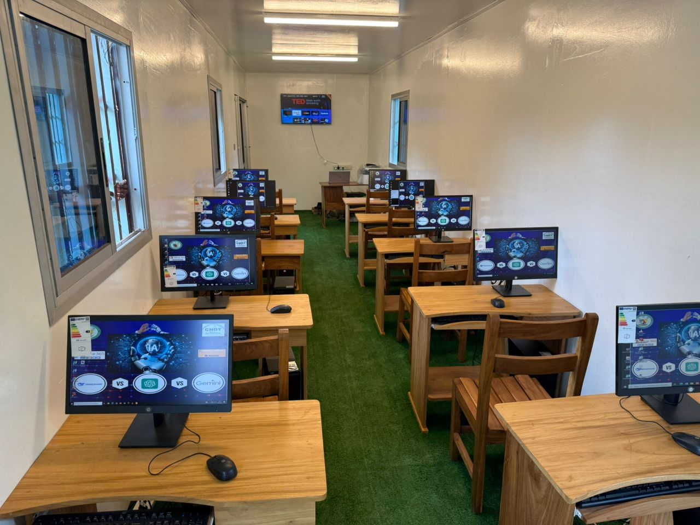
Les travaux à réaliser ont notamment concerné la restauration des ressources encyclopédiques hors ligne Kiwix et la rationalisation des profils utilisateurs. Ces opérations sont importantes pour assurer un accès plus fiable aux contenus pédagogiques et faciliter la gestion quotidienne du parc informatique.
Le diagnostic a ainsi permis de distinguer les équipements immédiatement disponibles de ceux nécessitant une intervention corrective. Il constitue une base pour la programmation des opérations de maintenance et l'amélioration progressive de la disponibilité des ressources numériques.
Au-delà du constat technique, cette mission rappelle que la pérennité des plateformes rurales exige une démarche continue associant entretien des équipements, gestion raisonnée de l'énergie, mise à jour des ressources et suivi régulier de l'infrastructure.
4. CONSOLIDER LES ACQUIS ET PRÉPARER UNE NOUVELLE ÉTAPE DE L’INCLUSION NUMÉRIQUE
Les expériences conduites à Akonolinga et à Bayangam, complétées par le diagnostic technique réalisé en 2026, mettent en évidence plusieurs leviers pour renforcer durablement l'impact des Plateformes énergétiques rurales.
Institutionnaliser des clubs numériques et d'initiation à l'IA
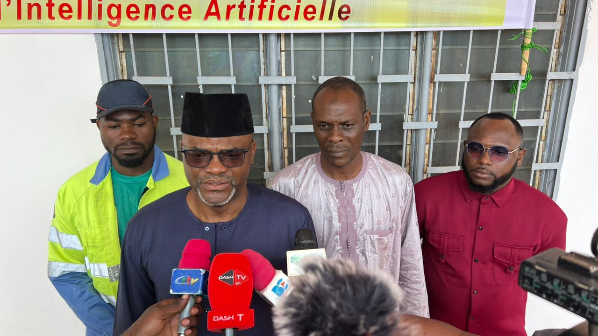
La création de clubs numériques au sein des PER d'Akonolinga et de Bayangam permettrait de prolonger les apprentissages au-delà des ateliers ponctuels. Ces espaces pourraient accueillir des activités régulières d'initiation à la programmation, de découverte de l'intelligence artificielle, de création numérique et de développement de petits projets répondant aux besoins locaux.
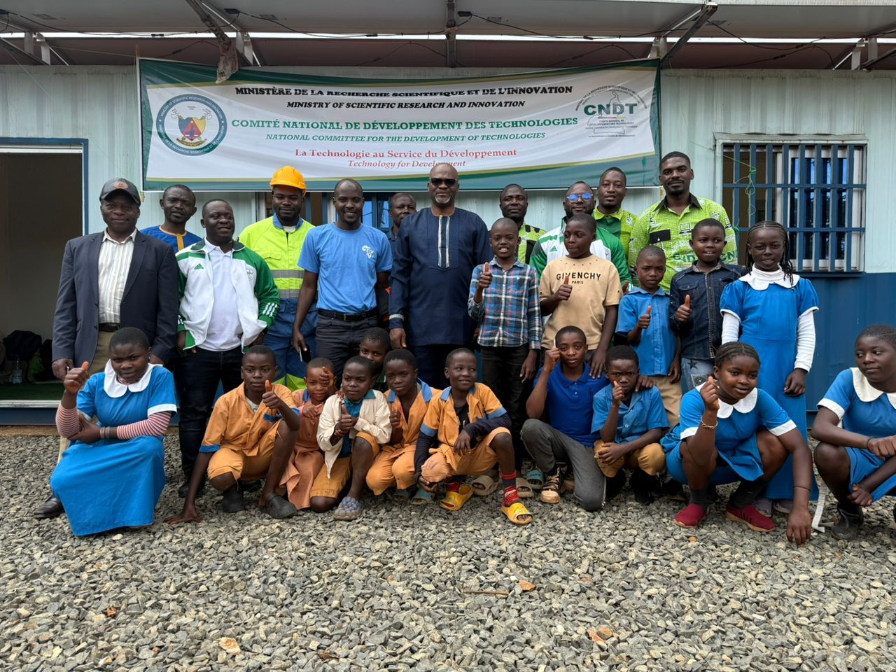
Former des relais locaux pour assurer la continuité pédagogique
La mise en place d'un programme de formation des formateurs à destination des enseignants et des encadreurs locaux contribuerait à pérenniser les acquis. En renforçant les compétences de ces relais, le MINRESI et le CNDT pourraient favoriser une transmission continue des connaissances et une plus grande autonomie des communautés dans l'utilisation des ressources numériques.
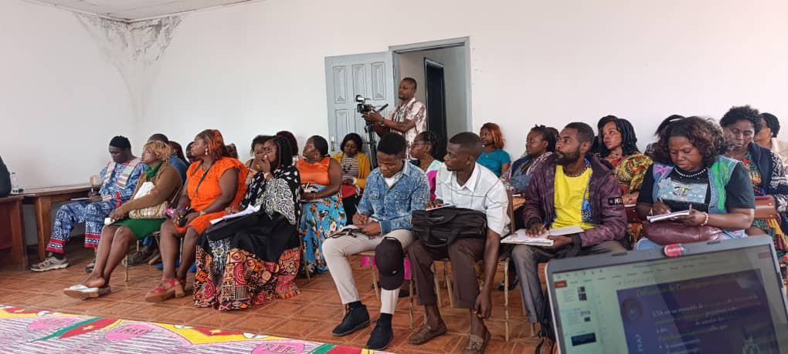
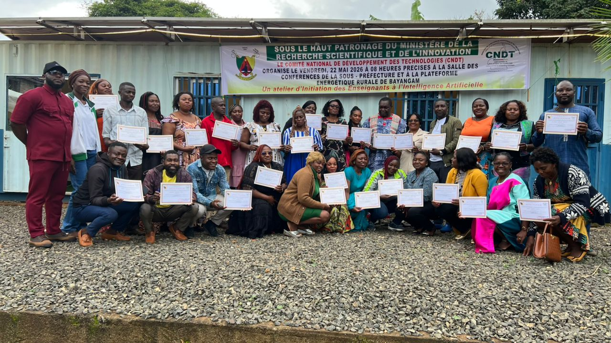
Adapter les capacités énergétiques et techniques aux besoins
L'évolution des usages invite à évaluer régulièrement les capacités des installations photovoltaïques et du parc informatique. Les éventuels investissements complémentaires, notamment en équipements informatiques, en solutions de connectivité et en dispositifs de protection adaptés aux conditions d'exploitation, devraient être définis à partir des besoins mesurés et d'une étude technique préalable.
Une attention particulière devrait être accordée à l'équilibre entre la puissance énergétique disponible, les charges effectivement utilisées et les objectifs de fonctionnement du centre multimédia.
Formaliser un programme de maintenance préventive
L'élaboration d'un calendrier périodique de contrôle des systèmes photovoltaïques, des ordinateurs et des ressources logicielles constitue un autre levier prioritaire. Ce dispositif pourrait s'appuyer sur des fiches de suivi, un inventaire actualisé des équipements, des indicateurs de disponibilité et un mécanisme de signalement rapide des pannes. Cette organisation permettrait d'anticiper les dysfonctionnements, de mieux programmer les interventions et d'optimiser l'utilisation des investissements publics consacrés aux infrastructures numériques rurales.
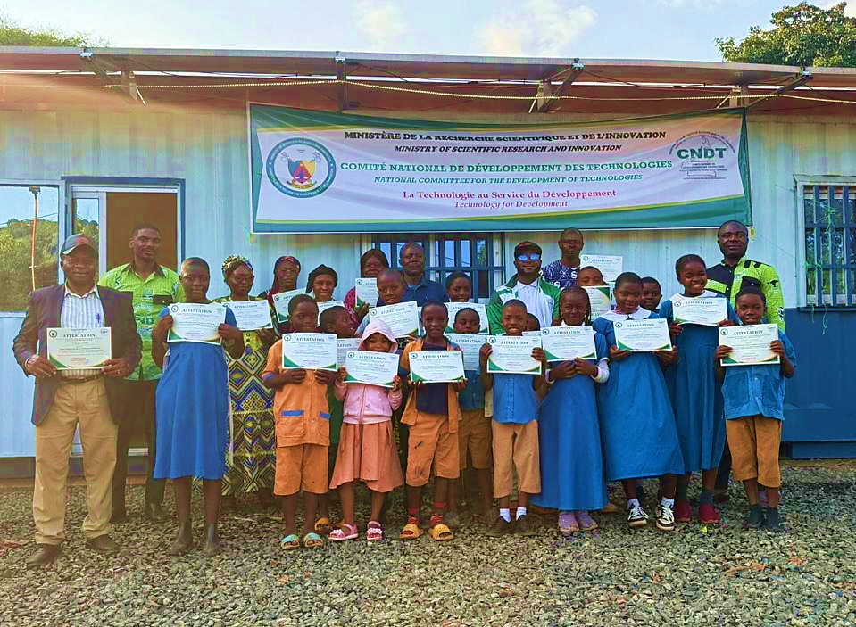
CONCLUSION : FAIRE DES PLATEFORMES ÉNERGÉTIQUES RURALES DES LEVIERS DURABLES DE TRANSFORMATION NUMÉRIQUE
Les actions menées par le MINRESI, à travers le CNDT, aux Plateformes énergétiques rurales d'Akonolinga et de Bayangam illustrent une approche concrète de la réduction de la fracture numérique. En associant infrastructures à énergie solaire, apprentissage des outils informatiques, programmation, ressources éducatives hors ligne et sensibilisation à l'intelligence artificielle, ces initiatives contribuent à rapprocher les nouvelles technologies des populations rurales.
La mobilisation des autorités administratives, des collectivités territoriales et des acteurs éducatifs renforce la portée de cette démarche. Quant à la mission technique de juin 2026 à Bayangam, elle rappelle que l'impact des formations dépend également de la capacité à préserver les équipements et à garantir leur disponibilité dans la durée.
Au-delà des ateliers organisés, l'enjeu consiste désormais à inscrire ces expériences dans une dynamique continue de formation, de maintenance et d'innovation locale. Le développement de compétences numériques, l'accompagnement des jeunes et la valorisation des infrastructures de proximité constituent autant de conditions favorables à l'inclusion numérique et à la participation des communautés rurales à la transformation technologique du Cameroun.
À travers ces initiatives, le MINRESI et le CNDT réaffirment la vocation des Plateformes énergétiques rurales : faire de l'accès à l'énergie, au savoir et aux technologies numériques un levier de développement territorial et une contribution aux ambitions d'émergence du Cameroun à l'horizon 2035.
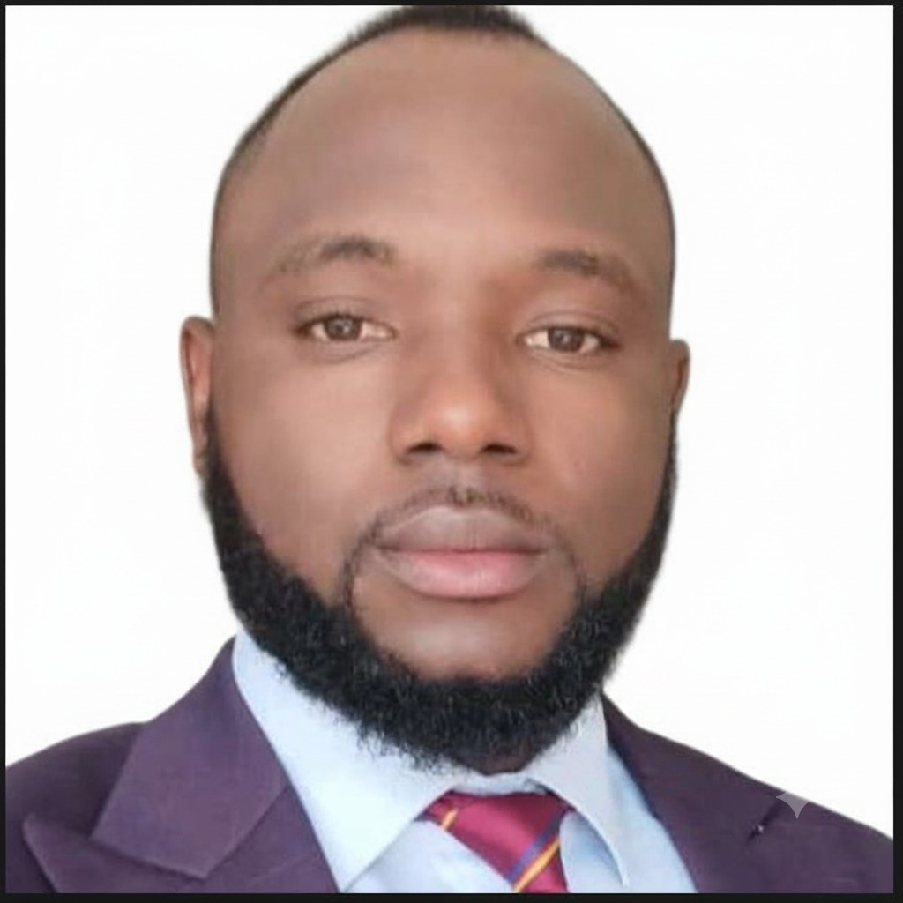
Galerie
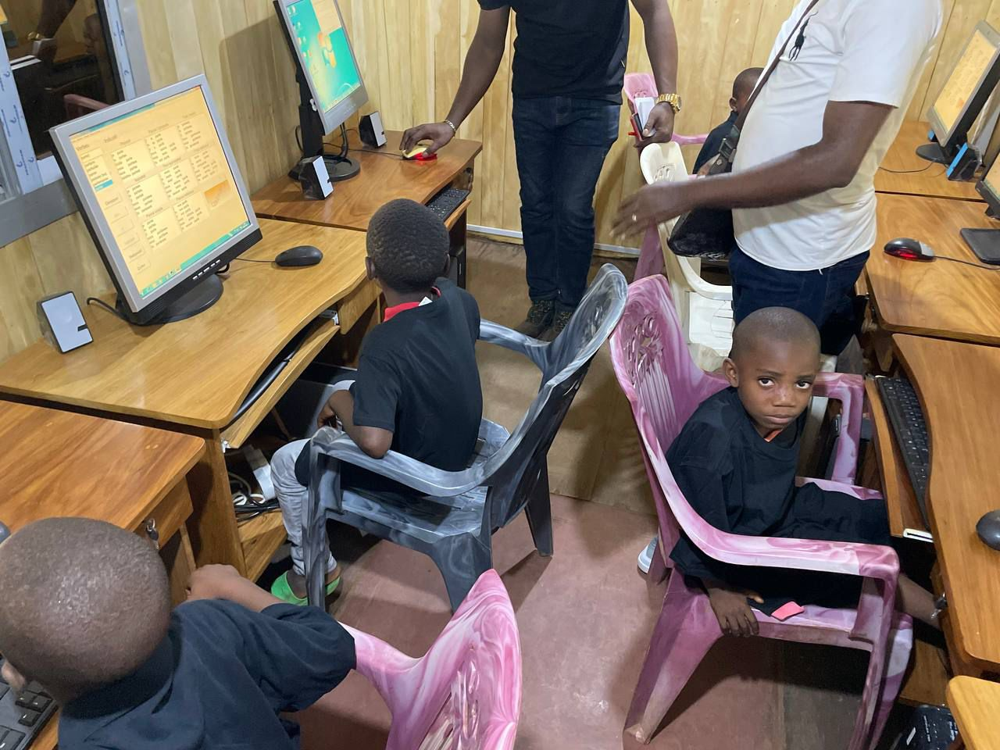
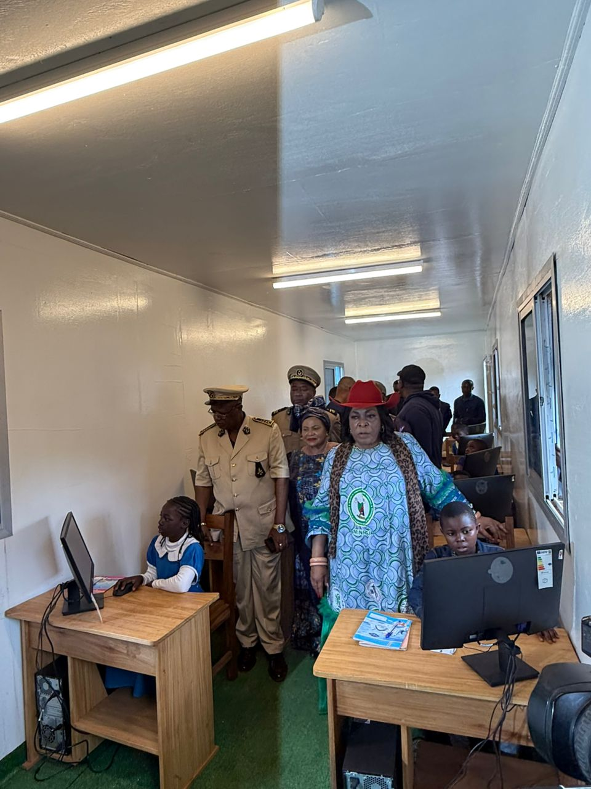
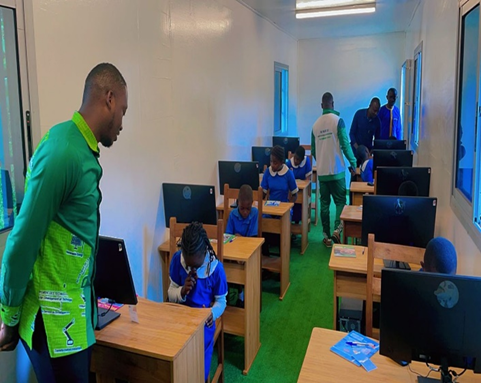